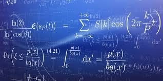

En esta materia trabajamos temas como sucesión geométrica y funciones, que me hicieron pensar y razonar mejor antes de resolver un problema
Aprendimos a resolver ejercicios paso a paso y a no rendirnos cuando algo no salía a la primera
Al principio algunos temas se me complicaban, pero con práctica fui entendiendo mejor
El maestro explica con claridad y pone ejemplos que ayudan a comprender los procedimientos
También hicimos actividades en clase para reforzar lo que veíamos en el pizarrón
Siento que mejoré mi habilidad para analizar problemas y buscar soluciones
Además, aprendí que las matemáticas no solo son números, sino también lógica y razonamiento
Esta materia me ayudó a tener más disciplina y concentración al trabajar
En general, Pensamiento Matemático me dejó un aprendizaje importante para seguir avanzando en mis estudios
